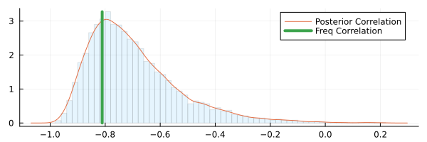
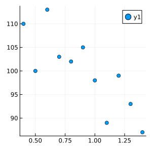
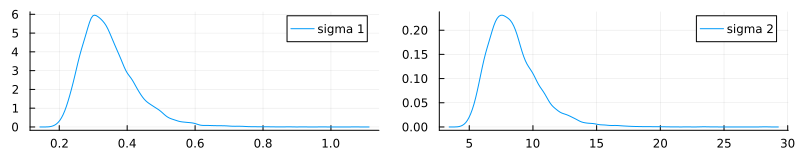
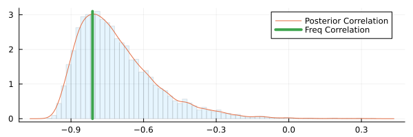
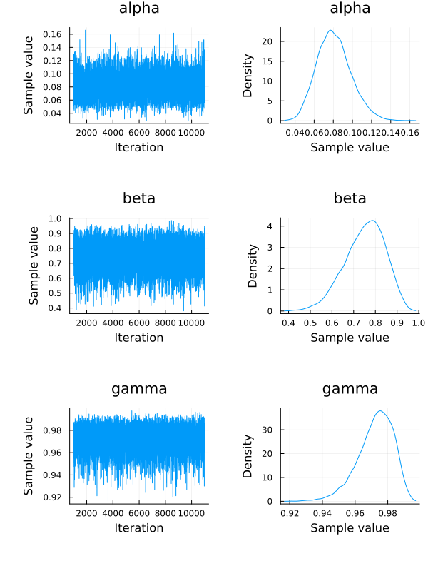
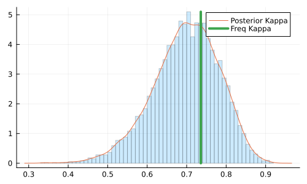
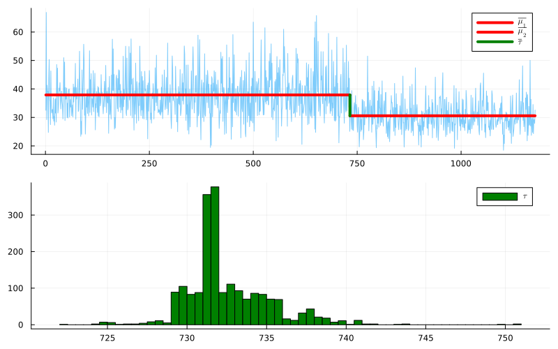
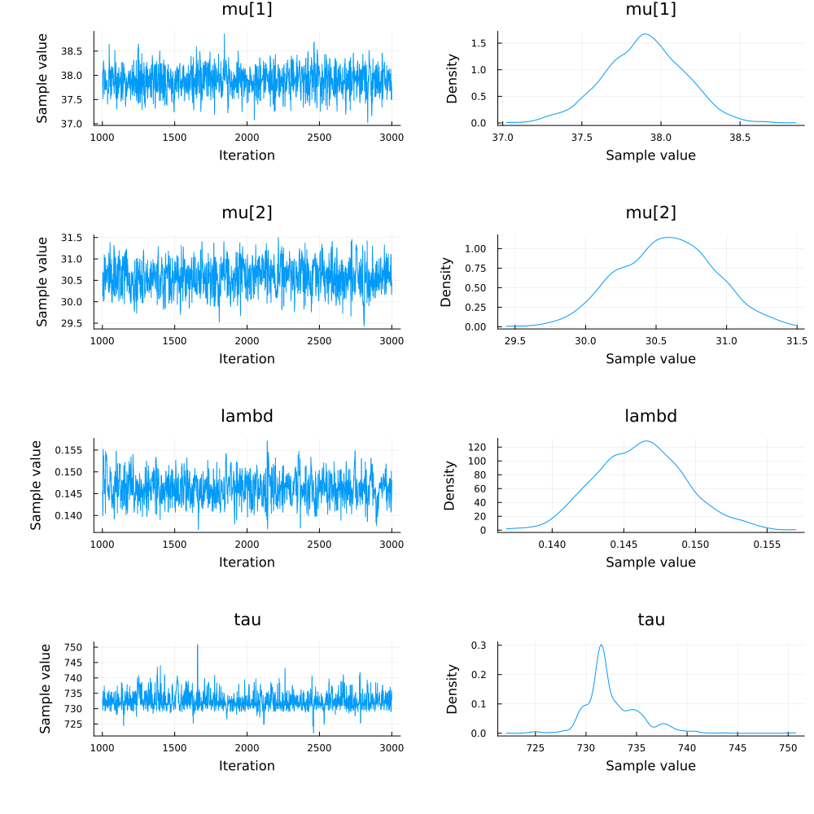
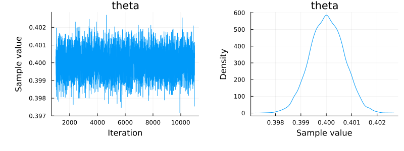
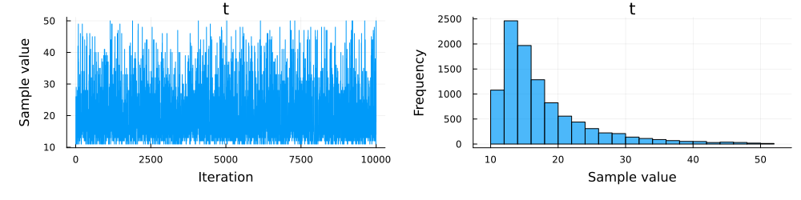

[playground] Julia Turing.jl : Bayesian Cognitive Modeling - Some examples of data analysis
bayesian cognitive modeling chapter 5 with julia programming language
Github: https://github.com/quangtiencs/bayesian-cognitive-modeling-with-turing.jl
Bayesian Cognitive Modeling is one of the classical books for Bayesian Inference. The old version used WinBUGS/JAG software as the main implementation. You can find other implementations, such as Stan and PyMC, in the below link. I reimplemented these source codes with Julia Programming Language & Turing library in this tutorial.
- WinBUGS/JAGS (official) & Stan: https://bayesmodels.com/
- PyMC: https://github.com/pymc-devs/pymc-resources/tree/main/BCM
5.1 Pearson correlation
\mu_{1},\mu_{2} \sim \text{Gaussian}(0, 1/ \sqrt{.001}) \sigma_{1},\sigma_{2} \sim \text{InvSqrtGamma} (.001, .001) r \sim \text{Uniform} (-1, 1)
x_{i} \sim \text{MvGaussian} \left( (\mu_{1},\mu_{2}), \begin{bmatrix} \sigma_{1}^2 & r\sigma_{1}\sigma_{2} \\\ r\sigma_{1}\sigma_{2} & \sigma_{2}^2\end{bmatrix} \right)
x = [[0.8, 102.0],
[1.0, 98.0],
[0.5, 100.0],
[0.9, 105.0],
[0.7, 103.0],
[0.4, 110.0],
[1.2, 99.0],
[1.4, 87.0],
[0.6, 113.0],
[1.1, 89.0],
[1.3, 93.0]]
m = transpose(reduce(hcat, x));
freq_correlation = cor(m[:, 1], m[:, 2])
@model function PearsonCorrelationModel1(x)
r ~ Uniform(-1., 1.)
mu ~ filldist(Normal(0.0, 1. / sqrt(0.001)), 2)
lambda ~ filldist(truncated(Gamma(0.001, 1 / 0.001), lower=1e-7, upper=1000), 2)
sigma = 1 ./ sqrt.(lambda)
cov = [1/lambda[1] r*sigma[1]*sigma[2];
r*sigma[1]*sigma[2] 1/lambda[2]]
for i in eachindex(x)
x[i] ~ MultivariateNormal(mu, cov)
end
enditerations=10_000
burnin=500
chain = sample(PearsonCorrelationModel1(x), NUTS(1000, 0.9; init_ϵ=0.02), iterations, burnin=burnin
, init_theta=(r=-0.7, mu=[0.9, 100], lambda=[9, 0.02]))
bayes_corr_plot = histogram(chain[:r], label=false, alpha=0.1, normalize=true)
height = max(filter(e -> !(isnan(e)), bayes_corr_plot[1][1][:y])...)
density!(chain[:r], label="Posterior Correlation", size=(600, 200))
println("Freq Correlation:", freq_correlation)
println("Posterior R Estimation:", mean(chain[:r] |> collect))
plot!([freq_correlation, freq_correlation], [0, height], label="Freq Correlation", linewidth=4, fmt=format)Sampling: 100%|█████████████████████████████████████████| Time: 0:00:01
Freq Correlation:-0.8109670756358504
Posterior R Estimation:-0.6949106643379455


Chains MCMC chain (10000×1×1 Array{Float64, 3}):
Iterations = 1001:1:11000
Number of chains = 1
Samples per chain = 10000
Wall duration = 7.67 seconds
Compute duration = 7.67 seconds
parameters = r
internals =
Summary Statistics
parameters mean std naive_se mcse ess rhat ⋯
Symbol Float64 Float64 Float64 Float64 Float64 Float64 ⋯
r -0.6949 0.1667 0.0017 0.0021 5186.3199 0.9999 ⋯
1 column omitted
Quantiles
parameters 2.5% 25.0% 50.0% 75.0% 97.5%
Symbol Float64 Float64 Float64 Float64 Float64
r -0.9148 -0.8141 -0.7305 -0.6141 -0.27175.2 Pearson correlation with uncertainty
\mu_{1},\mu_{2} \sim \text{Gaussian}(0, .001) \sigma_{1},\sigma_{2} \sim \text{InvSqrtGamma} (.001, .001) r \sim \text{Uniform} (-1, 1)
y_{i} \sim \text{MvGaussian} \left((\mu_{1},\mu_{2}), \begin{bmatrix}\sigma_{1}^2 & r\sigma_{1}\sigma_{2} \\\\ r\sigma_{1}\sigma_{2} & \sigma_{2}^2\end{bmatrix} \right) x_{ij} \sim \text{Gaussian}(y_{ij},\lambda_{j}^e)
x = [[0.8, 102.0],
[1.0, 98.0],
[0.5, 100.0],
[0.9, 105.0],
[0.7, 103.0],
[0.4, 110.0],
[1.2, 99.0],
[1.4, 87.0],
[0.6, 113.0],
[1.1, 89.0],
[1.3, 93.0]]
sigma_error = [0.03, 1.0]
# sigma_error = [0.03, 10.0]
m = transpose(reduce(hcat, x));
freq_correlation = cor(m[:, 1], m[:, 2])
@model function PearsonCorrelationModel2(x)
r ~ Uniform(-1., 1.)
mu ~ filldist(Normal(0.0, 1. / sqrt(0.001)), 2)
lambda ~ filldist(truncated(Gamma(0.001, 1 / 0.001), lower=1e-7, upper=1000), 2)
sigma = 1 ./ sqrt.(lambda)
cov = [1/lambda[1] r*sigma[1]*sigma[2];
r*sigma[1]*sigma[2] 1/lambda[2]]
y = Vector{Vector}(undef, length(x))
for i in eachindex(x)
y[i] ~ MultivariateNormal(mu, cov)
x[i] ~ MvNormal(y[i], sigma_error)
end
end
iterations=10_000
burnin=5_000
logger = Logging.SimpleLogger(Logging.Error)
chain = Logging.with_logger(logger) do
sample(PearsonCorrelationModel2(x), NUTS(1000, 0.9; init_ϵ=0.02), iterations, burnin=burnin)
end
bayes_corr_plot = histogram(chain[:r], label=false, alpha=0.1, normalize=true)
height = max(filter(e -> !(isnan(e)), bayes_corr_plot[1][1][:y])...)
density!(chain[:r], label="Posterior Correlation", size=(600, 200))
println("Freq Correlation:", freq_correlation)
println("Posterior R Estimation:", mean(chain[:r] |> collect))
plot!([freq_correlation, freq_correlation], [0, height], label="Freq Correlation", linewidth=4, fmt=format)Sampling: 100%|█████████████████████████████████████████| Time: 0:00:10
Freq Correlation:-0.8109670756358504
Posterior R Estimation:-0.707698754727043
Chains MCMC chain (10000×39×1 Array{Float64, 3}):
Iterations = 1001:1:11000
Number of chains = 1
Samples per chain = 10000
Wall duration = 14.61 seconds
Compute duration = 14.61 seconds
parameters = r, mu[1], mu[2], lambda[1], lambda[2], y[1][1], y[1][2],
y[2][1], y[2][2], y[3][1], y[3][2], y[4][1], y[4][2], y[5][1], y[5][2], y[6][1],
y[6][2], y[7][1], y[7][2], y[8][1], y[8][2], y[9][1], y[9][2], y[10][1], y[10][2],
y[11][1], y[11][2]
internals = lp, n_steps, is_accept, acceptance_rate, log_density,
hamiltonian_energy, hamiltonian_energy_error, max_hamiltonian_energy_error,
tree_depth, numerical_error, step_size, nom_step_size
Summary Statistics
parameters mean std naive_se mcse ess rhat ⋯
Symbol Float64 Float64 Float64 Float64 Float64 Float64 ⋯
r -0.7077 0.1645 0.0016 0.0018 8325.4187 0.9999 ⋯
mu[1] 0.9196 0.1103 0.0011 0.0011 8824.5770 0.9999 ⋯
mu[2] 99.2518 2.6873 0.0269 0.0272 8605.3889 0.9999 ⋯
lambda[1] 9.6645 4.2193 0.0422 0.0395 11030.1791 0.9999 ⋯
lambda[2] 0.0164 0.0072 0.0001 0.0001 10264.5579 1.0006 ⋯
y[1][1] 0.8008 0.0299 0.0003 0.0003 17468.1463 0.9999 ⋯
y[1][2] 101.9749 0.9814 0.0098 0.0065 22015.0363 0.9999 ⋯
y[2][1] 0.9993 0.0296 0.0003 0.0002 20131.5447 0.9999 ⋯
y[2][2] 97.9950 1.0033 0.0100 0.0067 23034.7125 0.9999 ⋯
y[3][1] 0.5078 0.0295 0.0003 0.0002 23658.7533 0.9999 ⋯
y[3][2] 100.2488 0.9990 0.0100 0.0075 21035.4230 0.9999 ⋯
y[4][1] 0.8967 0.0303 0.0003 0.0003 13896.6164 1.0001 ⋯
y[4][2] 104.7986 0.9955 0.0100 0.0069 19690.0894 1.0000 ⋯
y[5][1] 0.7022 0.0296 0.0003 0.0002 20837.7832 1.0001 ⋯
y[5][2] 103.0138 0.9898 0.0099 0.0071 22622.8507 1.0000 ⋯
y[6][1] 0.4042 0.0292 0.0003 0.0002 19468.6436 0.9999 ⋯
y[6][2] 109.9443 0.9752 0.0098 0.0065 18272.1134 0.9999 ⋯
y[7][1] 1.1946 0.0304 0.0003 0.0002 21935.2455 1.0000 ⋯
y[7][2] 98.8367 0.9901 0.0099 0.0078 18614.5866 0.9999 ⋯
y[8][1] 1.3978 0.0300 0.0003 0.0002 18379.3279 0.9999 ⋯
y[8][2] 87.1597 0.9927 0.0099 0.0067 20195.1954 0.9999 ⋯
y[9][1] 0.5984 0.0297 0.0003 0.0002 17940.5118 1.0001 ⋯
y[9][2] 112.6867 0.9925 0.0099 0.0081 17646.8957 1.0000 ⋯
⋮ ⋮ ⋮ ⋮ ⋮ ⋮ ⋮ ⋱
1 column and 4 rows omitted
Quantiles
parameters 2.5% 25.0% 50.0% 75.0% 97.5%
Symbol Float64 Float64 Float64 Float64 Float64
r -0.9236 -0.8272 -0.7429 -0.6258 -0.2935
mu[1] 0.7075 0.8488 0.9173 0.9883 1.1435
mu[2] 93.6298 97.6217 99.3438 100.9859 104.3339
lambda[1] 3.2546 6.5745 9.0539 12.1124 19.6782
lambda[2] 0.0057 0.0111 0.0153 0.0205 0.0331
y[1][1] 0.7428 0.7805 0.8007 0.8208 0.8603
y[1][2] 100.0329 101.3261 101.9774 102.6141 103.9200
y[2][1] 0.9410 0.9793 0.9992 1.0192 1.0562
y[2][2] 96.0241 97.3035 97.9938 98.6829 99.9415
y[3][1] 0.4497 0.4876 0.5076 0.5278 0.5658
y[3][2] 98.2955 99.5667 100.2461 100.9326 102.1994
y[4][1] 0.8372 0.8763 0.8967 0.9170 0.9570
y[4][2] 102.8479 104.1349 104.7939 105.4598 106.7453
y[5][1] 0.6433 0.6823 0.7023 0.7220 0.7609
y[5][2] 101.0435 102.3509 103.0184 103.6796 104.9578
y[6][1] 0.3471 0.3846 0.4042 0.4241 0.4613
y[6][2] 108.0433 109.2915 109.9499 110.5899 111.8738
y[7][1] 1.1344 1.1742 1.1943 1.2150 1.2541
y[7][2] 96.9020 98.1683 98.8344 99.5087 100.7409
y[8][1] 1.3398 1.3775 1.3979 1.4182 1.4563
y[8][2] 85.2048 86.5008 87.1558 87.8195 89.0989
y[9][1] 0.5395 0.5787 0.5985 0.6181 0.6566
y[9][2] 110.7736 112.0166 112.6787 113.3587 114.6394
⋮ ⋮ ⋮ ⋮ ⋮ ⋮
4 rows omitted5.3 The kappa coefficient of agreement
\kappa = (\xi-\psi)/(1-\psi) \xi = \alpha\beta + (1-\alpha) \gamma \psi = (\pi_{a}+\pi_{b})(\pi_{a}+\pi_{c})+(\pi_{b}+\pi_{d})(\pi_{c}+\pi_{d}) \alpha,\beta,\gamma \sim \text{Beta} (1, 1)
\pi_{a} = \alpha\beta \pi_{b} = \alpha(1-\beta)
\pi_{c} = (1-\alpha)(1-\gamma)
\pi_{d} = (1-\alpha)\gamma
x \sim \text{Multinomial} ([\pi_{a},\pi_{b},\pi_{c},\pi_{d}],n)
# Influenza
x = [14, 4, 5, 210]
# Hearing Loss
# x = [20, 7, 103, 417]
# Rare Disease
# x = [0, 0, 13, 157]
@model function KappaCoefficientAgreement(x)
alpha ~ Beta(1, 1)
beta ~ Beta(1, 1)
gamma ~ Beta(1, 1)
pi1 = alpha * beta
pi2 = alpha * (1 - beta)
pi3 = (1 - alpha) * (1 - gamma)
pi4 = (1 - alpha) * gamma
xi = alpha * beta + (1 - alpha) * gamma
x ~ Multinomial(sum(x), [pi1, pi2, pi3, pi4])
psi = (pi1 + pi2) * (pi1 + pi3) + (pi2 + pi4) * (pi3 + pi4)
kappa = (xi - psi) / (1 - psi)
return (psi=psi, kappa=kappa)
end
iterations=10_000
burnin=5_000
model_kappa = KappaCoefficientAgreement(x)
chain = sample(model_kappa, NUTS(), iterations, burnin=burnin)
chains_params = Turing.MCMCChains.get_sections(chain, :parameters)
quantities = generated_quantities(model_kappa, chains_params);Sampling: 100%|█████████████████████████████████████████| Time: 0:00:00
0.7357943807483934kappa = map(x -> x[:kappa], quantities)
h = histogram(kappa, size=(500, 300), alpha=0.2, normalize=true, label=false)
height = max(filter(e -> !(isnan(e)), h[1][1][:y])...)
density!(kappa, label="Posterior Kappa")
println("Freq:", kappa_cohen)
println("Mean Posterior:", mean(kappa))
plot!([kappa_cohen, kappa_cohen], [0, height], label="Freq Kappa", linewidth=4, fmt=format)Freq:0.7357943807483934
Mean Posterior:0.6981673531822107
5.4 Change detection in time series data
\mu_{1},\mu_{2} \sim \text{Gaussian}(0, 1 / \sqrt{.001}) \lambda \sim \text{Gamma} (.001, .001) \tau \sim \text{Uniform} (0, t_{max})
c_{i} \sim \begin{cases} \text{Gaussian}(\mu_{1}, \lambda), & \text{if $t_{i} \lt \tau$} \\ \text{Gaussian}(\mu_{2}, \lambda), & \text{if $t_{i} \ge \tau$} \end{cases}
x = df.data
n = length(x)
@model function ChangePointTimeSeries(x, x_index)
mu ~ MvNormal([0, 0], sqrt(1000) * ones(2))
lambd ~ truncated(Gamma(0.001, 1 / 0.001), lower=1e-7, upper=1000)
tau ~ Uniform(1, length(x))
is_less_than_tau = x_index .< tau
for i in eachindex(x)
if is_less_than_tau[i] > 0
x[i] ~ Normal(mu[1], 1/lambd)
else
x[i] ~ Normal(mu[2], 1/lambd)
end
end
end
iterations=2_000
burnin=1000
model_changepoint = ChangePointTimeSeries(x, eachindex(x) |> collect)
chain = sample(model_changepoint, NUTS(), iterations)Sampling: 100%|█████████████████████████████████████████| Time: 0:00:50
Chains MCMC chain (2000×16×1 Array{Float64, 3}):
Iterations = 1001:1:3000
Number of chains = 1
Samples per chain = 2000
Wall duration = 53.36 seconds
Compute duration = 53.36 seconds
parameters = mu[1], mu[2], lambd, tau
internals = lp, n_steps, is_accept, acceptance_rate, log_density,
hamiltonian_energy, hamiltonian_energy_error, max_hamiltonian_energy_error,
tree_depth, numerical_error, step_size, nom_step_size
Summary Statistics
parameters mean std naive_se mcse ess rhat ⋯
Symbol Float64 Float64 Float64 Float64 Float64 Float64 ⋯
mu[1] 37.8935 0.2519 0.0056 0.0081 848.0341 0.9998 ⋯
mu[2] 30.5731 0.3347 0.0075 0.0141 511.1892 1.0075 ⋯
lambd 0.1462 0.0031 0.0001 0.0002 515.3547 0.9999 ⋯
tau 732.5357 2.6711 0.0597 0.1192 527.5883 1.0063 ⋯
1 column omitted
Quantiles
parameters 2.5% 25.0% 50.0% 75.0% 97.5%
Symbol Float64 Float64 Float64 Float64 Float64
mu[1] 37.3788 37.7242 37.8973 38.0655 38.3694
mu[2] 29.9319 30.3368 30.5773 30.8057 31.2169
lambd 0.1405 0.1440 0.1462 0.1483 0.1527
tau 729.0119 731.1409 731.7966 733.9456 738.6237p1 = plot(eachindex(x) |> collect, x, size=(800, 300), label=false, alpha=0.5)
mu1 = mean(chain[:"mu[1]"])
mu2 = mean(chain[:"mu[2]"])
mean_tau = mean(chain[:tau])
plot!([1, mean_tau], [mu1, mu1], label=L"\overline{\mu_1}", linewidth=4, color="red")
plot!([mean_tau, length(x)], [mu2, mu2], label=L"\overline{\mu_2}", linewidth=4, color="red")
plot!([mean_tau, mean_tau], [mu1, mu2], label=L"\overline{\tau}", linewidth=4, color="green")
p2 = histogram(chain[:tau], size=(800, 300), label=L"\tau", color="green")
plot(p1, p2; layout=(2,1), size=(800, 500), fmt=format)

5.5 Censored data
\theta \sim \text{Uniform}(0.25, 1) z_{i} \sim \text{Binomial}(\theta, n) 15 \le z_{i} \le 25, \text{if} \; y_{i} = 1
x = 30
n = 50
nfails = 949
range_unobs = 15:25 |> collect
z = 30
function censor_likelihood(n, p, range_unobs, nfails)
return loglikelihood(Binomial(n, p), range_unobs) * nfails
end
@model function ChaSaSoon(x, n, range_unobs, nfails)
theta ~ Uniform(0.25, 1.0)
x ~ Binomial(n, theta)
Turing.@addlogprob! censor_likelihood(n, theta, range_unobs, nfails)
end
iterations=10_000
burnin=1000
model_chachasoon = ChaSaSoon(x, n, range_unobs, nfails)
chain = sample(model_chachasoon, NUTS(), iterations, burnin=burnin)
plot(chain, size=(800,300), left_margin=10Plots.mm, bottom_margin=10Plots.mm, fmt=format)
5.6 Recapturing planes
k \sim \text{Hypergeometric}(n, x, t) t \sim \text{Categorical}(\alpha)
x = 10 # number of captures
k = 4 # number of recaptures from n
n = 5 # size of second sample
tmax = 50 # maximum population size
lower = x + (n - k)
upper = tmax
bin_categorial = length(lower:upper)
@model function RecapturingPlanes(k)
t ~ DiscreteUniform(lower, upper)
k ~ Hypergeometric(x, t - x , n)
end
iterations=10_000
burnin=1000
recapturing_planes = RecapturingPlanes(k)
chain = sample(recapturing_planes, SMC(), iterations, burnin=burnin)Sampling: 100%|█████████████████████████████████████████| Time: 0:00:00
Chains MCMC chain (10000×3×1 Array{Float64, 3}):
Log evidence = -2.2807174322546118
Iterations = 1:1:10000
Number of chains = 1
Samples per chain = 10000
Wall duration = 11.31 seconds
Compute duration = 11.31 seconds
parameters = t
internals = lp, weight
Summary Statistics
parameters mean std naive_se mcse ess rhat ⋯
Symbol Float64 Float64 Float64 Float64 Float64 Float64 ⋯
t 17.1500 6.7442 0.0674 0.0860 5737.4943 1.0000 ⋯
1 column omitted
Quantiles
parameters 2.5% 25.0% 50.0% 75.0% 97.5%
Symbol Float64 Float64 Float64 Float64 Float64
t 11.0000 13.0000 15.0000 19.0000 37.0000